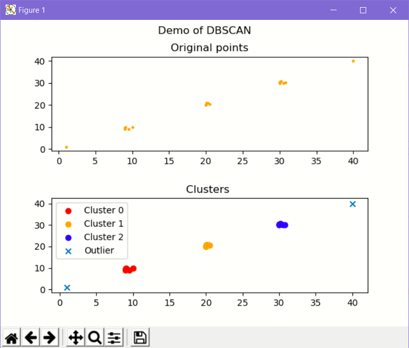

Introduction
In this article I would like to discuss some nuances about the `DBSCAN` clustering algorithm. This is by no means a detailed explanation of the algorithm. The intent of this article is to demonstrate how to calculate the value of `epsilon` parameter when the various dimensions of the features follow different measurement systems. E.g. Age on X axis and Height on Y axis.
An overview of the DBSCAN algorithm
to be done -show a picture to illustrate how epsilon works
In depth videos to undersand DBSCAN
Coursera video
LinkYoutube video
Very simple code snippet to demonstrate DBSCAN
In the following snippet we demonstrate a very simple usage of the Scikit's DBSCAN algorithm implementation.
The input to the algorithm is an array of vectors (2d points in this case) and the output is an uni-dimensional array of integers which denote the cluster label for each and very input vector.
E.g. [0,0,1,1,-1,0,0,2,2,2,0,-1,0] implies there are 3 clusters identified with the labels 0,1,2 and 2 outliers denoted by -1.

Sample python code using Scikit learn
import matplotlib.pyplot as plt
from sklearn.cluster import DBSCAN
def create_data():
src_points=[[10,10],[20,20],[30,30]]
src_points.append([9.0,9.0])
src_points.append([9.5,9.0])
src_points.append([9.0,9.5])
src_points.append([9.1,9.8])
src_points.append([20.0,20.0])
src_points.append([20.1,20.9])
src_points.append([20.5,20.5])
src_points.append([20.2,20.8])
src_points.append([30.0,30.0])
src_points.append([30.5,30.0])
src_points.append([30.0,30.5])
src_points.append([30.2,30.8])
src_points.append([30.8,30.2])
#add some outliers
src_points.append([1,1])
src_points.append([40,40])
return src_points
def find_dbscan_clusters(data):
data_points=data
epsilon=1
min_samples=2
db=DBSCAN(eps=epsilon, min_samples=min_samples)
db.fit(data_points)
return db.labels_
def display_clusters(data,cluster_and_noise_labels:[]):
cluster_labels= set(filter(lambda l: l!=-1, cluster_and_noise_labels))
count_of_outliers=len(list(filter(lambda l: l==-1, cluster_and_noise_labels)))
print("Total clusters produced:%d" % (len(cluster_labels)))
print("Total outliers produced:%d" % (count_of_outliers))
data_points=data
#Plot the original data points
x=list(map(lambda p: p[0],data_points))
y=list(map(lambda p: p[1],data_points))
fig, axs = plt.subplots(2)
plt.subplots_adjust(hspace=0.5)
fig.suptitle('Demo of DBSCAN')
axs[0].scatter(x, y,s=5,c='orange')
axs[0].set_title("Original points")
#Plot the clusters and outliers
axs[1].set_title("Clusters ")
colors=["red","orange", "blue"]
tuples_of_data_points_class_labels=list(zip(x,y,cluster_and_noise_labels))
unique_labels=set(cluster_and_noise_labels)
for label in unique_labels:
noisy_points=list(filter(lambda t: t[2] == label,tuples_of_data_points_class_labels))
point_x = list(map(lambda p:p[0],noisy_points))
point_y = list(map(lambda p:p[1],noisy_points))
if (label == -1):
axs[1].scatter(point_x, point_y, marker='x', label="Outlier")
else:
legend_label="Cluster %d" % (label)
axs[1].scatter(point_x, point_y, marker='o', label=legend_label, c=colors[label])
axs[1].legend(loc="upper left")
plt.show()
toy_data=create_data()
cluster_and_noise_labels=find_dbscan_clusters(toy_data)
display_clusters(toy_data,cluster_and_noise_labels)
What happens when the dimensions of a feature have different units of measurements?
To be done Present the problem here. A toy dataset of age, weight or age, height